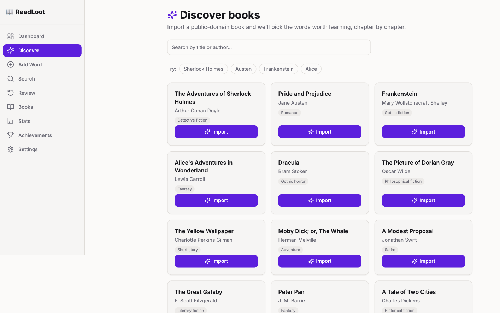
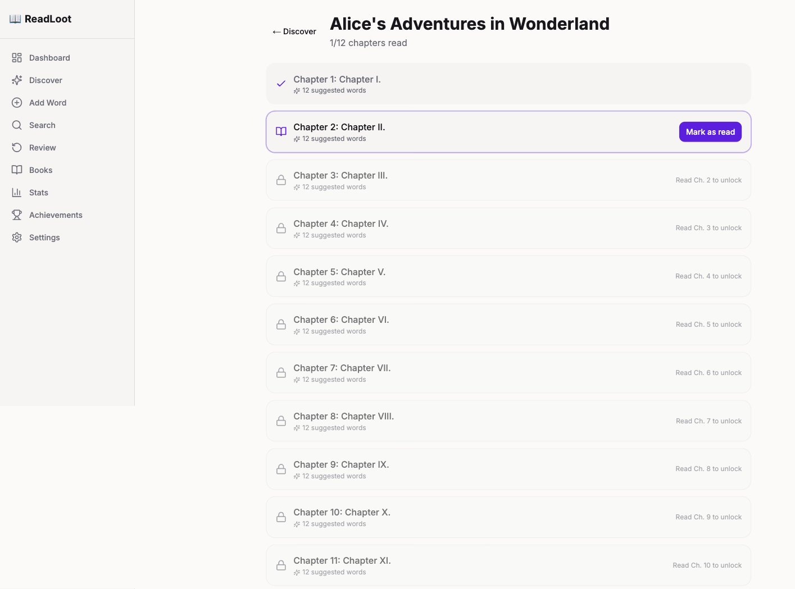
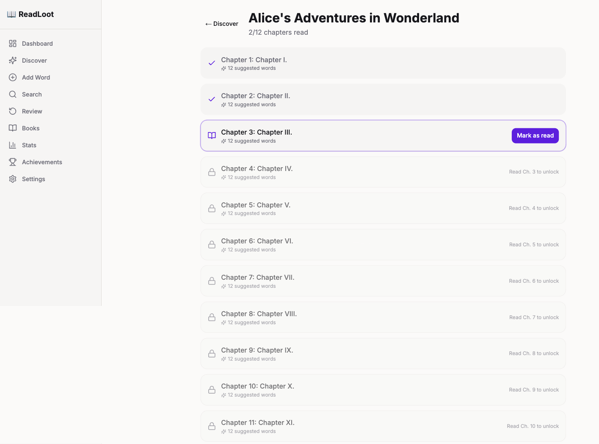
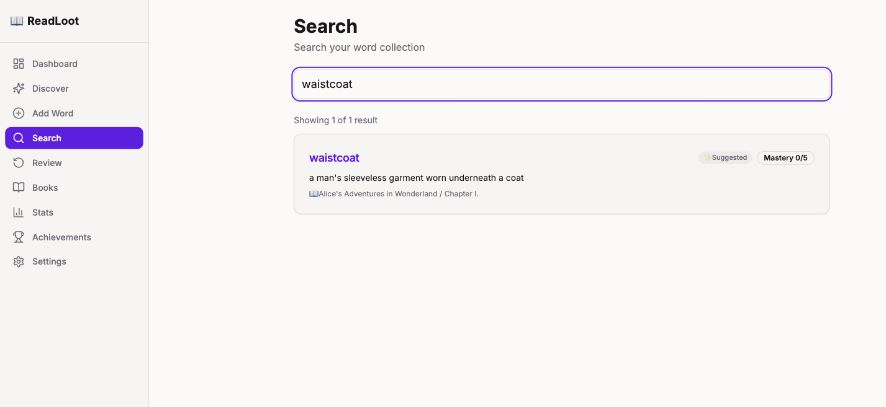
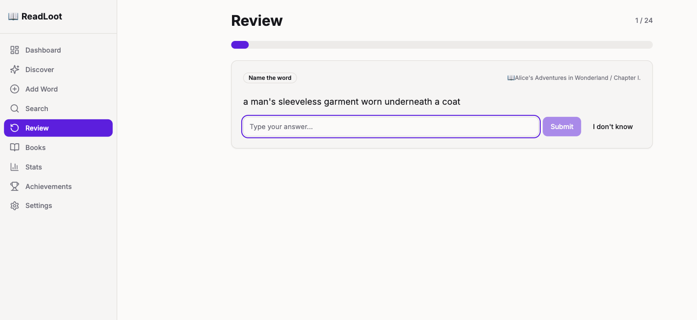

Added the headline feature from the roadmap to a shipped v1 full-stack vocabulary RPG: import a public-domain book, auto-extract the words worth learning per chapter, gate them behind chapter unlocks, and feed them into the existing spaced-repetition queue.
✓ 56 CLI + 34 API tests pass✓ frontend build clean✓ verified end-to-end in browser
New backend tests
+13
▲ 47→56 CLI, 28→34 API
CEFR-graded words
8,653
▲ CEFR-J + Octanove A1–C2
Catalog books
12
▲ from 0 (live Gutenberg text)
New frontend pages
2
▲ Discover + Library unlock
The feature: a user searches the book catalog, imports a title, and the system fetches the real text from Project Gutenberg, splits it into chapters, and picks ~12 rare/B2+ words per chapter with offline WordNet definitions. Those words are locked — parked at a far-future review date — until the user marks that chapter read, which unlocks them into the review queue and awards XP. Auto-picked words read as ✨ Suggested; user-added words stay 🔖 Saved.
🔎 Search catalog→✨ Import book→📖 Fetch + split chapters→🔒 Extract gated vocab→✅ Mark chapter read→🧠 Words enter review
Before / after
● BEFORE — v1
Vocabulary added one word at a time, by hand
No book source — "books" were just folders the user named
No NLP, no difficulty grading, no auto-definitions
Every inserted word was immediately due for review
books/[name] page crashed on Next 14.2 (use() on a non-promise)
Search results showed blank mastery and no word origin
● AFTER — Phase 1
Import a real public-domain book; vocab generated automatically
spaCy lemmatize → CEFR-J/Octanove + wordfreq difficulty → top 12/chapter
Offline WordNet definitions + synonyms, no per-word API calls
Chapter-gating: auto-words locked until the chapter is marked read
Live Gutenberg fetch, background extraction, pollable progress
Auto vs manual cue; both crashing detail pages fixed
Example: the gating mechanic
● PROBLEM — words default to due today
-- db.py schema
next_review TEXT NOT NULL DEFAULT (date('now'))
-- get_due_words filters next_review <= today
-- so ANY inserted word is instantly in
-- the review queue. Importing a whole book
-- would dump every word at once and spoil
-- later chapters.
● FIX — far-future sentinel until unlock
LOCKED_REVIEW_DATE = "9999-12-31"
# auto-words inserted locked:
add_words_bulk(..., locked=True)
# -> next_review = LOCKED_REVIEW_DATE
# -> get_due_words skips them (no query change)
def mark_chapter_read(conn, chapter_id):
# pull locked rows forward to today
UPDATE word_entries SET next_review = today
WHERE chapter_id = ? AND next_review = LOCKED_REVIEW_DATE
# idempotent; awards XP once
No change to the review query — the sentinel rides the existing next_review <= today filter. Manual words are untouched.
Live UI (captured from the running app)
Discover — curated public-domain catalog, import with live progress, example-search chips

Library — chapters locked; one bright "current" row, the rest "Read Ch. N to unlock"

Library — after Mark-as-read: 2/12, next row promotes, +15 XP burst

Search — auto-extracted word shows ✨ Suggested + real mastery

Review — unlocked auto-words flow into the existing SM-2 queue

What got built — 4 slices
Slice 0 · Migrations
Guarded, idempotent additive migration: word_entries.source (default 'manual'), reading_progress, book_catalog (distinct from the per-user books table). Runs safely on every connect via a PRAGMA table_info guard.
✓ connect twice, no "duplicate column" · 46/46 baseline green
Slice 1 · Extractor + gated bulk insert
spaCy (parser/NER excluded) → CEFR-J/Octanove level + wordfreq Zipf fallback → top-N rare words → WordNet definition. New batch insert path (one commit + one Markdown rewrite per chapter) with insert-time locking.
✓ 10 unit tests · 300-page book extracts in ~2s warm
Slice 2 · Gutenberg import (backend)
Bundled catalog search (Gutendex was DNS-dead), live gutenberg.org plaintext fetch, chapter split with heading detection + chunk fallback, threaded import with pollable status, mark-read unlock endpoint.
✓ 6 API tests · live import: Alice 12 ch / 144 words
Slice 3 · Frontend
Discover page (search + import progress), Library page (chapter lock/unlock with Framer Motion unlock animation + XP burst, reduced-motion safe), auto/manual word cue, nav entries.
✓ next build — 13 routes, exit 0
Slice 4 · Verify
Full lifecycle driven in a real browser via Playwright: login → discover → import → lock state → mark-read → unlock → search cue → review.
✓ 56 CLI + 34 API green · 0 errors from new code
Bugs found & fixed
Bug
Root cause
Fix
Book detail pages crashed: "unsupported type passed to use()"
v1 used Next 15's use(params), but the repo runs Next 14.2 which passes params as a plain object
Support both: unwrap only if it's a thenable. Fixed my Library page and the pre-existing Books page
fixed
Auto-words showed "🔖 Saved" + blank mastery in search
search_words never selected source, id, or mastery_level
Added the columns to the FTS query and response
fixed
Importing a book would spoil later chapters
Words default to due today; no unlock gate existed
Far-future sentinel + mark-read; designed in, not patched after
designed
Known / not in scope
Pre-existing flaky test test_new_word_entry_defaults — asserts next_review default against Python local date, but SQLite date('now') is UTC. Fails every evening after 5pm PDT. Not mine; left untouched.
pre-existing
Gutendex hosted API is DNS-dead — search uses a bundled catalog. Swap in live Gutendex later by replacing one function.
deferred
Roadmap Phases 2–5 (rarity tiers, evolution, FSRS) — not started.
later
Review the diff, then git add / commit (left to you).